금형제작기능장 (2017-03-05 기출문제)
1과목: 임의 구분
1. 다음 밸브 기호의 명칭은?
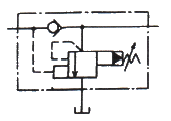
- 무부하 릴리프 밸브
- 양방향 릴리프 밸브
- 카운터 밸런스 밸브
- 파일럿 작동형 시퀀스 밸브
(정답률: 64%)

2. 유압 펌프의 펌프동력을 구하는 식으로 옳은 것은? (단, Lp : 펌프동력[kW], P : 실제 펌프 토출 압력[kgf/cm2], Q : 실제 펌프 토출량[cm3/s] 이다.)
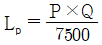
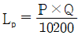
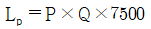
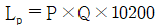
(정답률: 91%)
3. 로드 자체가 피스톤 역할을 하므로 피스톤형에 비해 로드가 굵어 부하에 의한 휨의 영향이 적은 실린더는?
- 다단 실린더
- 단동 실린더
- 램형 실린더
- 복동 실린더
(정답률: 80%)
4. 공압 캐스케이드 회로의 특성에 대한 설명으로 옳은 것은?
- 복잡한 작동 시퀀스로 배선이 간단하다.
- 방향성 리밋 밸브를 사용하므로 신뢰성이 보장된다.
- 캐스케이드 밸브가 많아질수록 스위칭 시간이 짧아진다.
- 캐스케이드 밸브가 많아지게 되면, 제어 에너지의 압력강하가 발생한다.
(정답률: 90%)
5. 공기를 양측(피스톤측, 로드측)에 공급하여 실린더가 전·후진 시 동일한 추력과 속도를 쉽게 얻을 수 있는 특징을 가진 실린더는?
- 충격 실린더
- 탠덤 실린더
- 양 로드 실린더
- 텔레스코프 실린더
(정답률: 80%)
6. 금형 강재를 연삭해보니 연삭열에 의해 균열이 발생한 경우, 개선 대책으로 적절하지 않은 것은?
- 조직이 거친 숫돌로 바꾼다.
- 결합도가 큰 숫돌로 바꾼다.
- 눈막힘이 발생된 숫돌은 교정한다.
- 냉각능력이 높은 연삭액을 다량 사용한다.
(정답률: 70%)
7. 레이저 가공의 특징으로 옳은 것은?
- 자동 가공이 불가능하다.
- 가공 시 열에 의한 변형이 적다.
- 가공면은 섬세하나 정밀도가 낮다.
- 접촉가공으로 공구의 마모가 발생된다.
(정답률: 64%)
8. 금형을 이용한 제품 가공 시 사용되는 방호장치의 형식이 아닌 것은?
- 가드식
- 열전자식
- 손쳐내기식
- 양수 조작식
(정답률: 80%)
9. 와이어 컷 방전 가공에 대한 설명으로 틀린 것은?
- 테이퍼 가공은 할 수 없다.
- 가공물에 따른 전극의 제작이 필요 없다.
- 담금질 된 강이나 초경합금의 가공이 가능하다.
- 복잡한 형상이라도 분할하지 않고 가공이 가능하다.
(정답률: 80%)
10. 방전가공의 특징으로 틀린 것은?
- 가공부분에 변질층이 남는다.
- 가공할 형상에 맞춘 공구 전극이 필요하다.
- 가공 속도가 빠르고 액 중에서 가공하지 않아도 된다.
- 도전체라면 가공물의 경도, 취성의 점도에 관계없이 가공할 수 있다.
(정답률: 90%)
11. 프레스 금형에서 가동식 스트리퍼에 대한 설명으로 틀린 것은?
- 스트립을 누르면서 가공한다.
- 가공한 제품의 거스러미가 적다.
- 펀치가 소재에 박힐 때까지 안내한다.
- 소재가 두껍고 생산량이 적을 경우에 사용한다.
(정답률: 82%)
12. 다음 그림과 같이 머시닝센터에서 외곽 및 홈 가공 종료 후 반드시 실행해야 할 G-코드는?
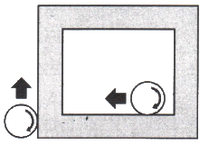
- G30
- G40
- G50
- G60
(정답률: 90%)
13. 금형 재료가 갖추어야 할 일반적인 성질이 아닌 것은?
- 취성이 클 것
- 내식성이 클 것
- 가공성이 양호할 것
- 열처리 변형이 작을 것
(정답률: 91%)
14. 강과 주철을 비교할 때 회주철의 가장 우수한 성질은?
- 연신율
- 용접성
- 인장 강도
- 진동흡수성
(정답률: 64%)
15. 철(Fe)-탄소(C) 평형상태도에서 공석강의 조직은?
- 페라이트
- 펄라이트
- 오스테나이트
- 시멘타이트
(정답률: 80%)
16. 주물용 Al 합금이 아닌 것은?
- 실루민
- 라우탈
- 배빗메탈
- 하이드로 날륨
(정답률: 80%)
17. 재료의 굵기나 두께에 따라 담금질 효과가 다르게 나타나는 현상은?
- 불림효과
- 풀림효과
- 뜨임효과
- 질량효과
(정답률: 알수없음)
18. 스테인리스(Stainless)강의 종류가 아닌 것은?
- 페라이트계 스테인리스강
- 마텐자이트계 스테인리스강
- 오스테나이트계 스테인리스강
- 베이나이트계 스테인리스강
(정답률: 90%)
19. 강도는 낮으나 전연성이 좋고 색깔이 모조금에 가까우며, 5~20%의 Zn의 함유된 구리합금은?
- 톰백
- 인청동
- 두랄루민
- 문쯔메탈
(정답률: 알수없음)
20. +2μm의 오차가 잇는 게이지블록(기준길이 20mm)을 다이얼게이지(최소눈금 0.001mm)의 0눈금에 세팅하여 공작물을 측정하였더니 지침이 5눈금 적게 돌아갔다면, 실제 치수는?
- 19.993mm
- 19.997mm
- 20.003mm
- 20.007mm
(정답률: 82%)
2과목: 임의 구분
21. 정밀정반의 평면도, 마이크로미터의 직각도, 평행도, 공작기계 베드면의 진직도, 직각도, 기타 미소각도의 차 등의 측정에 이용되는 광학적 측정기는?
- 공기마이크로미터
- 오토콜리메이터
- 전기마이크로미터
- 텔리스코핑 게이지
(정답률: 90%)
22. 게이지 블록과 같이 밀착이 가능하므로 홀더가 필요 없으며, 각도의 가산, 감산에 의해서 필요한 각도를 조합할 수 있고, 조합 후 정도는 2″~3″인 것은?
- 오토콜리메이터
- 기계식 각도 정규
- 수준기
- N.P.L식 각도게이지
(정답률: 알수없음)
23. 다음 중 암나사 유효지름을 측정하는 방법으로 가장 적합한 것은?
- 강구를 측정편으로 하여 측장기로 측정하는 방법
- 나사마이크로미터 의한 방법
- 삼침법에 의한 방법
- 피치게이지 의한 방법
(정답률: 67%)
24. 표면 거칠기 표시에서 Rz를 나타내는 것은? (단, KS B ISO 4287 기준)
- 최대 단면 곡선 골 깊이
- 최대 단면 곡선 산 깊이
- 단면 곡선의 최대 높이
- 단면 곡선 요소의 평균 높이
(정답률: 64%)
25. 한계게이지 재료에 요구되는 성질로 거리가 먼 것은?
- 열팽창계수가 클 것
- 변형이 적을 것
- 내마모성이 클 것
- 가공성이 좋을 것
(정답률: 82%)
26. 공작물 관리방법 중 육면체의 이상적인 위치 결정법은?
- 2-1-1
- 3-1-1
- 2-2-1
- 3-2-1
(정답률: 100%)
27. 드릴 부시와 공작물 사이의 간격은 가공 칩의 크기 및 형태에 따라 결정할 수 있는데, 주물의 칩과 같이 연속되지 않고 부서지기 쉬운 칩이 발생할 경우 적절한 간격은?
- 드릴 지름의 1/20 정도
- 드릴 지름의 1/2 정도
- 드릴 지름의 2배 정도
- 드릴 지름의 20배 정도
(정답률: 100%)
28. 지그의 설계 시 고려하는 Dowel Pin(맞춤 핀)에 대한 설명 중 틀린 것은?
- Dowel Pin은 볼트의 보충 역할을 한다.
- Dowel Pin은 지그나 고정구의 정확한 위치를 보증하기 위해 사용한다.
- Dowel Pin의 위치는 필요한 곳에 2개를 설치할 수 있다.
- Dowel Pin은 중간에 끼워 맞춤으로 적용할 수 있다.
(정답률: 100%)
29. 선반용 고정구로서 내경과 동심되게 외경을 가공하고자 할 때 사용하는 고정구는?
- 면판
- 테이퍼 절삭장치
- 심봉
- 앵글 플레이트
(정답률: 100%)
30. 볼 슬라이드 다이 세트(ball slide die set)의 특징으로 틀린 것은?
- 단발형 금형에 적합하다.
- 정도 높은 금형에 적합하다.
- 마모가 적고 초기의 정도를 장시간 유지할 수 있다.
- 고속으로 작업하여도 발열이 적고 눌러 붙는 일이 생기지 않는다.
(정답률: 80%)
31. 프로그레시브 금형에서 소재 이송이 잘못되어 금형의 손상을 입히는 것을 방지하기 위해 설치하는 것은?
- 가이드 핀
- 리프터 유닛
- 블랭킹 펀치
- 미스피드 검출장치
(정답률: 91%)
32. 항상 정확한 위치에서 제품이 가공되도록 소재의 위치를 결정하여 주는 금형부품은?
- 맞춤 핀
- 키커 핀
- 가이드 핀
- 파일럿 핀
(정답률: 90%)
33. 프로그레시브 다이(progressive die)를 설계할 때 스트립 레이아웃 전개 방법이 틀린 것은?
- 스크랩과 제품이 혼합되어 배출되도록 스트립을 설계한다.
- 피어싱 부븐이 근접해 있는 경우 여러 개의 스테이션으로 분산시킨다.
- 스트립 레이아웃을 검토하여 가급적 여유폭(잔폭)이 최소가 되게 한다.
- 드로잉 또는 포밍 공정에서는 이송이 제한받지 않도록 블랭크를 전개한다.
(정답률: 100%)
34. 프레스 가공에서 드로잉률을 구하는 식으로 옳은 것은? (단, D : 소재의 지름, t : 소재의 두께, d : 제품의 평균지름이다.)
- 드로잉률 =

- 드로잉률 =

- 드로잉률 =

- 드로잉률 =

(정답률: 80%)
35. 프로그레시브 금형에서 예비 트림 및 노칭이 없이 이루어지며 마지막에 절단 또는 블랭킹으로 제품 가공이 완료되는 캐리어는?
- 센터 캐리어
- 사이드 캐리어
- 솔리드 캐리어
- 편측 사이드 캐리어
(정답률: 60%)
36. 드로잉 가공된 제품에 균열이 발생하였을 때 발생원인으로 적절하지 않은 것은?
- 드로잉 속도가 빠르다.
- 소재의 연신율이 크다.
- 펀치의 각 반지름이 너무 작다.
- 블랭크 홀더의 압력이 너무 크다.
(정답률: 80%)
37. 금형을 프레스 기계에 세팅할 때 슬라이드 밑면과 볼스터 사이의 거리를 표시하는 것으로 프레스 기계에 장착할 수 있는 금형의 공간은?
- 스트로크
- 다이 하이트
- 다이 숏 하이트
- 프레스 숏 하이트
(정답률: 85%)
38. 판 두께가 5mm인 경강 제품을 블랭킹 하는데 6000 kgf의 전단력이 필요할 때 프레스의 일량은 몇 kgf·m 인가? (단, 일량 보정계수는 0.7 이다.)
- 19
- 21
- 24
- 28
(정답률: 91%)
39. 프레스 중 냉간단조에 적합한 것은?
- 너클 프레스
- 마찰 프레스
- 유압 프레스
- 크랭크 프레스
(정답률: 70%)
40. 이젝터 핀 방식을 사용할 때의 장점으로 틀린 것은?
- 핀 구멍을 가공하기가 쉽다.
- 호환성이 좋으며 파손 시 보수가 쉽다.
- 성형품의 임의의 위치에 설치할 수 있다.
- 중앙에 구멍이 있는 부시 모양의 성형품에 적합하다.
(정답률: 알수없음)
3과목: 임의 구분
41. 성형품 살 두께가 커짐에 따라 수축률이 작아지는 수지는?
- PC
- ABS
- PMMA
- 경질 PVC
(정답률: 64%)
42. 언더 컷을 처리할 수 있는 금형부품 중 일정한 직선거리로 형개한 후에 슬라이드 코어를 후퇴시킬 수 있는 기구는?
- 체인
- 스플링
- 앵귤러 핀
- 도그 레그 캠
(정답률: 64%)
43. 앵귤러 핀의 작용길이가 30mm, 경사각이 18°이고 틈새를 무시할 때, 슬라이드 블록의 운동거리는 약 얼마인가?
- 9.97mm
- 9.27mm
- 8.17mm
- 6.07mm
(정답률: 100%)
44. 사출금형의 설계·제작 시방서에 반드시 기재되지 않아도 되는 사항은?
- 러너의 형식
- 사출기 사양
- 사출성형 조건
- 성형제품 치수 정밀도
(정답률: 75%)
45. 유압과 사출압력과의 관계식으로 옳은 것은? (단, 실린더의 지름 : D0[cm], 유압 : P0[kg/cm2], 성형기 스크루의 지름 : D[mm], 사출압력 : P[kg/cm2] 이다.)
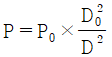
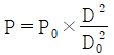
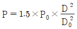
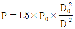
(정답률: 55%)
46. 사이드 게이트(side gate)의 특징으로 옳은 것은?
- 성형 주기가 길어진다.
- 특정 수지에만 적용할 수 있다.
- 게이트의 치수 수정이 용이하다.
- 성형품 외관에 게이트 흔적이 남지 않는다.
(정답률: 알수없음)
47. 사출성형품에 발생한 기포를 방지하기 위한 방법으로 적절하지 않은 것은?
- 사출 압력을 내린다.
- 수지를 충분히 건조시킨다.
- 캐비티 내의 공기빼기를 충분히 한다.
- 윤활제나 이형제의 과다한 사용을 피한다.
(정답률: 82%)
48. 용융된 수지가 금형의 캐비티 내에서 분기하여 흐르다가 합류하는 부분에 가는 선이 생기는 성형불량 현상은?
- 크레이징(crazing)
- 은줄(silver streak)
- 웰드 라인(weld line)
- 플로 마크(flow mark)
(정답률: 90%)
49. 결정성 수지와 비교한 비결정성 수지의 특징으로 틀린 것은?
- 수지가 불투명하다.
- 성형 수축률이 크다.
- 금형 냉각시간이 짧다.
- 치수정밀도가 높은 제품을 얻을 수 있다.
(정답률: 50%)
50. 워크 샘플링에 관한 설명 중 틀린 것은?
- 워크 샘플링은 일명 스냅리딩(Snap Reading)이라 불린다.
- 워크 샘플링은 스톱워치를 사용하여 관측대상을 순간적으로 관측하는 것이다.
- 워크 샘플링은 영국의 통계학자 L.H.C. Tippet가 가동률 조사를 위해 창안한 것이다.
- 워크 샘플링은 사람의 상태나 기계의 가동상태 및 작업의 종류 등을 순간적으로 관측하는 것이다.
(정답률: 60%)
51. 설비보전조직 중 지역보전(area maintenance)의 장·단점에 해당하지 않는 것은?
- 현장 왕복 시간이 증가한다.
- 조업요원과 지역보전요원과의 관계가 밀접해진다.
- 보전요원이 현장에 있으므로 생산 본위가 되며 생산의욕을 가진다.
- 같은 사람이 같은 설비를 담당하므로 설비를 잘 알며 충분한 서비스를 할 수 있다.
(정답률: 90%)
52. 설비배치 및 개선의 목적을 설명한 내용으로 가장 관계가 먼 것은?
- 재공품의 증가
- 설비투자 최소화
- 이동거리의 감소
- 작업자 부하 평준화
(정답률: 91%)
53. 3σ법의
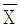
관리도에서 공정이 관리상태에 있는데도 불구하고 관리상태가 아니라고 판정하는 제1종 과오는 약 몇 % 인가?- 0.27
- 0.54
- 1.0
- 1.2
(정답률: 73%)
54. 검사의 종류 중 검사공정에 의한 분류에 해당되지 않는 것은?
- 수입검사
- 출하검사
- 출장검사
- 공정검사
(정답률: 90%)
55. 부적합품률이 20%인 공정에서 생상되는 제품을매시간 10개씩 샘플링 검사하여 공정을 관리하려고 한다. 이 때 측정되는 시료의 부적합품 수에 대한 기댓값과 분산은 약 얼마인가?
- 기대값 : 1.6, 분산 : 1.3
- 기대값 : 1.6, 분산 : 1.6
- 기대값 : 2.0, 분산 : 1.3
- 기대값 : 2.0, 분산 : 1.6
(정답률: 60%)
56. 머시닝 센터에서 4날 - ø30 엔드밀을 사용하여 SM45C를 가공하고자 한다. 가공 프로그램에서 약 얼마의 이송속도로 지령해야 적절한가? (단, SM45C의 절삭속도는 80m/min, 공구의 날 당 이송량은 0.5mm이다.)
- 1200 mm/min
- 1500 mm/min
- 1700 mm/min
- 1900 mm/min
(정답률: 82%)
57. CNC 선반의 주요 어드레스 종류 및 기능 중에서 휴지 기능으로 사용할 수 없는 어드레스는?
- P
- X
- Q
- U
(정답률: 80%)
58. 다음 프로그램에서 보조프로그램이 실행되는 횟수는?
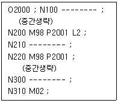
- 2회
- 3회
- 4회
- 5회
(정답률: 64%)
59. 다음 형상 모델링 중 공학적인 해석을 하는데 가장 적합한 것은?
- 2차원 모델
- 솔리드 모델
- 서피스 모델
- 와이어 프레임 모델
(정답률: 100%)
60. 지역 통신망(LAN) 시스템의 주요 특징이 아닌 것은?
- 자료의 전송속도가 빠르다.
- 가격 면에서 저렴한 정보통신 시스템이다.
- 정보 통신망 구성요소 간에 신뢰성이 높다.
- 신규장비를 전송매체로 첨가하기가 어렵다.
(정답률: 100%)